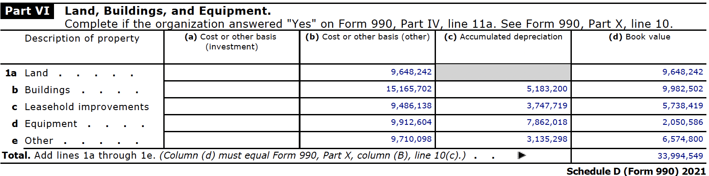

3. Facilities
1 List of Facilities
1.1 Fresno Facilites [1]
1.2 Other Facilities [2]
2 Contact Info
Medical Records myfaxmedrec@cmcenters.org Phone: (209) 546-3870 Fax: (209) 762-6808 Mail: P.O. Box 779, Stockton CA 95201
Administrative Offices info@cmcenters.org Phone: (209) 373-2800 Fax: (209) 373-2878 Mail: P.O. Box 779, Stockton CA 95201
Human Resources hr@cmcenters.org Phone: (209) 373-2800
Patient Portal Support (209) 430-6222
Patient Relations patientrelations@cmcenters.org
3 Map
4 Total Property Values
Taken from Schedule D Part VI of the 2023 Form 990:

References
2.
(2025) Community medical centers